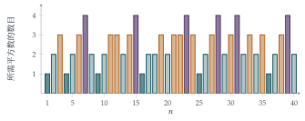

STEP III 1994，第 8 题
继续之前，请先阅读题目（原题为英文）。题目载于 STEP Support Programme 的题目资料库： step.maths.org/questions/94-s3-q8
引子
\(7\) 不是两个平方数之和，也不是三个平方数之和，却是四个平方数之和：\(7 = 4 + 1 + 1 + 1\)。1770 年，拉格朗日（Joseph-Louis Lagrange）证明了每一个正整数都是四个平方数之和（容许使用 \(0^2\)）。这条定理早在 1621 年已由 Bachet 提出猜想，费马（Fermat）亦声称自己证得，但一如以往没有留下证明；欧拉（Euler）为此钻研了四十年，始终差一步未能完成。
关键的工具由欧拉于 1748 年发现，正正就在这道题目之中：两个四平方和的积，本身也是一个四平方和。这表示只需对质数（prime number）证明拉格朗日定理，其余情况靠相乘便可得出。题目利用复矩阵（complex matrix）的行列式（determinant），寥寥数行便推导出这条恒等式（identity），而这些矩阵其实就是 第 6.7 节 中的四元数（quaternion），只是换了个面貌。
动笔之前
回想两平方的版本：\((a^2 + b^2)(p^2 + q^2)\) 是两个平方数之和，因为对复数 \(z = a + b\mathrm{i}\)、\(w = p + q\mathrm{i}\) 有 \(|z|^2|w|^2 = |zw|^2\)。矩阵可以怎样把这个结果推广到四个平方？
想法是找出一种由四个实数构成的“数”，它的“大小的平方”是 \(a^2 + b^2 + c^2 + d^2\)，而且具有可乘性（multiplicative）。矩阵的行列式正有可乘性：\(\det(\mathbf{AB}) = \det\mathbf{A}\det\mathbf{B}\)。因此我们要找一个由 \(a, b, c, d\) 构成的矩阵，其行列式为 \(a^2 + b^2 + c^2 + d^2\)，并且这类矩阵相乘后仍然是同一形式。
逐步解题
阶段 1 行列式是四个平方数之和
\(\begin{pmatrix} z_1 & z_2 \\ -z_2^* & z_1^* \end{pmatrix}\) 的行列式是甚么？若 \(z_1 = a + b\mathrm{i}\) 及 \(z_2 = c + d\mathrm{i}\)，以 \(a, b, c, d\) 表示又是甚么？
\(\det = z_1z_1^* + z_2z_2^* = |z_1|^2 + |z_2|^2 = a^2 + b^2 + c^2 + d^2\)。同样地，取 \(z_3 = p + q\mathrm{i}\) 及 \(z_4 = r + s\mathrm{i}\)，第二个矩阵的行列式为 \(p^2 + q^2 + r^2 + s^2\)。
阶段 2 乘积具有相同形式
相乘得 \[\begin{pmatrix} z_1 & z_2 \\ -z_2^* & z_1^* \end{pmatrix}\begin{pmatrix} z_3 & z_4 \\ -z_4^* & z_3^* \end{pmatrix} = \begin{pmatrix} z_1z_3 - z_2z_4^* & z_1z_4 + z_2z_3^* \\ -z_2^*z_3 - z_1^*z_4^* & -z_2^*z_4 + z_1^*z_3^* \end{pmatrix}.\] 设 \(w_1 = z_1z_3 - z_2z_4^*\) 及 \(w_2 = z_1z_4 + z_2z_3^*\)，则下面一行是 \((-w_2^*, w_1^*)\)，所以乘积是 \(\begin{pmatrix} w_1 & w_2 \\ -w_2^* & w_1^* \end{pmatrix}\)，形式相同。它的行列式是 \(|w_1|^2 + |w_2|^2\)，而由于行列式可以相乘， \[(a^2 + b^2 + c^2 + d^2)(p^2 + q^2 + r^2 + s^2) = |w_1|^2 + |w_2|^2.\]
阶段 3 读出四个平方
把 \(w_1 = (a + b\mathrm{i})(p + q\mathrm{i}) - (c + d\mathrm{i})(r - s\mathrm{i})\) 及 \(w_2 = (a + b\mathrm{i})(r + s\mathrm{i}) + (c + d\mathrm{i})(p - q\mathrm{i})\) 展开，写成实部（real part）和虚部（imaginary part）。
\[w_1 = (ap - bq - cr - ds) + \mathrm{i}(aq + bp + cs - dr),\] \[w_2 = (ar - bs + cp + dq) + \mathrm{i}(as + br - cq + dp).\] 所以 \[\begin{aligned} L_1 &= ap - bq - cr - ds, & L_2 &= aq + bp + cs - dr, \\ L_3 &= ar - bs + cp + dq, & L_4 &= as + br - cq + dp, \end{aligned}\] 每一个对 \(a, b, c, d\) 及对 \(p, q, r, s\) 都是线性（linear）的，并且 \((a^2 + b^2 + c^2 + d^2)(p^2 + q^2 + r^2 + s^2) = L_1^2 + L_2^2 + L_3^2 + L_4^2\)。■
例如，\(7 = 2^2 + 1^2 + 1^2 + 1^2\) 而 \(3 = 1^2 + 1^2 + 1^2 + 0^2\)。取 \((a, b, c, d) = (2, 1, 1, 1)\) 及 \((p, q, r, s) = (1, 1, 1, 0)\)，由公式得 \((L_1, L_2, L_3, L_4) = (0, 2, 4, 1)\)，而果然 \(0^2 + 2^2 + 4^2 + 1^2 = 21 = 7 \times 3\)。
回顾
可乘性是关键。这条恒等式来自 \(\det(\mathbf{AB}) = \det\mathbf{A}\det\mathbf{B}\)，正如两平方恒等式来自 \(|zw| = |z||w|\) 一样。
对乘法封闭（closure）。\(\begin{pmatrix} z_1 & z_2 \\ -z_2^* & z_1^* \end{pmatrix}\) 这个特殊形式在相乘之下保持不变，结果才会是另一个四平方和。
细心记账十分重要。最后一步虽属例行运算，却容易出错；正负号和共轭（conjugate）都必须小心处理。
背后的数学
拉格朗日的证明大致如下。根据欧拉恒等式，只需证明每个质数 \(p\) 都是四个平方数之和。先用一个计数论证，证明存在某个倍数 \(mp\)（其中 \(m < p\)）是四个平方数之和。然后用一个巧妙的“递降法”（descent）证明：若 \(mp\) 是四个平方数之和而 \(1 < m < p\)，则对某个更小的 \(m'\)，\(m'p\) 也是四个平方数之和；如此重复下去，便会到达 \(m = 1\)。（可与 第 1.5 节 中费马的递降法比较。）1834 年，雅可比（Jacobi）更进一步，求出把 \(n\) 写成四个平方数之和的方法的确切数目：\(n\) 的所有非 \(4\) 的倍数的因数之和的 \(8\) 倍。例如，\(1\) 有 \(8\) 种写法（\(\pm1\) 可放在四个位置中的任何一个）。

二、三、四
不同维数之间的规律相当微妙。两平方和来自复数，而一个数是两个平方数之和，当且仅当它的质因数中形如 \(4k + 3\) 的都以偶数次幂出现（第 1.6 节）。四平方和来自四元数，而每个数都是四平方和。但三平方和却完全没有乘法恒等式（并不存在一个“大小”具可乘性的三维数系；这正是哈密顿（Hamilton）研究三元组时失败的原因，见 第 6.7 节），相应的定理也较难：勒让德和高斯证明了，除非 \(n = 4^k(8m + 7)\)，否则 \(n\) 是三个平方数之和（图 7.8.1）。四以上，八维的八元数（octonion）给出一条八平方恒等式，由 Degen 和 Graves 发现；而胡尔维兹（Hurwitz）于 1898 年证明，这类恒等式只在 \(1\)、\(2\)、\(4\) 和 \(8\) 个平方的情况下存在。
华林问题
拉格朗日定理是华林（Edward Waring）于 1770 年提出的一个问题的第一个情况：对每个 \(k\)，是否存在一个数 \(g(k)\)，使得每个正整数都是最多 \(g(k)\) 个 \(k\) 次幂之和？希尔伯特（David Hilbert）于 1909 年证明了确实存在。现在我们知道 \(g(2) = 4\)、\(g(3) = 9\)（例如 \(23 = 2 \cdot 2^3 + 7 \cdot 1^3\) 需要九个立方数）以及 \(g(4) = 19\)。
思维技巧
要证明某个性质在乘法之下得以保持，可寻找一个代数结构（复数、四元数、矩阵），使该性质就是其中某个对象的“大小”，而大小具有可乘性。
一旦找到这样的结构，乘积恒等式便唾手可得，而一个关于所有数的问题，也就化为一个关于质数的问题。
延伸练习
一个实例。利用 \(L_1, \ldots, L_4\) 的公式，取 \((a, b, c, d) = (p, q, r, s) = (2, 1, 1, 1)\)，把 \(49 = 7 \times 7\) 写成四个平方数之和，并验算你的答案。它与显而易见的 \(49 = 7^2 + 0^2 + 0^2 + 0^2\) 是否相同？
四平方中的两平方。证明若 \(c = d = r = s = 0\)，这条恒等式便简化为 第 1.6 节 的两平方恒等式。
需要四个平方的数。考虑平方数模 \(8\) 的余数，证明形如 \(8m + 7\) 的数都不是三个平方数之和。
雅可比公式。数一数把 \(2\) 表示成四个平方数之和的方法有多少种（次序和正负号不同均视为不同），并验证答案是 \(8 \times (1 + 2) = 24\)。
延伸阅读
Harold Davenport, The Higher Arithmetic（Cambridge University Press）。第 V 章证明了拉格朗日四平方和定理。
John Conway & Derek Smith, On Quaternions and Octonions（A. K. Peters）。讲述四元数的算术，包括利用四元数整数证明四平方和定理。
Aigner & Ziegler, Proofs from THE BOOK，“Representing numbers as sums of two squares”（把数表示成两个平方数之和）一章。与本节相配的两平方版本。